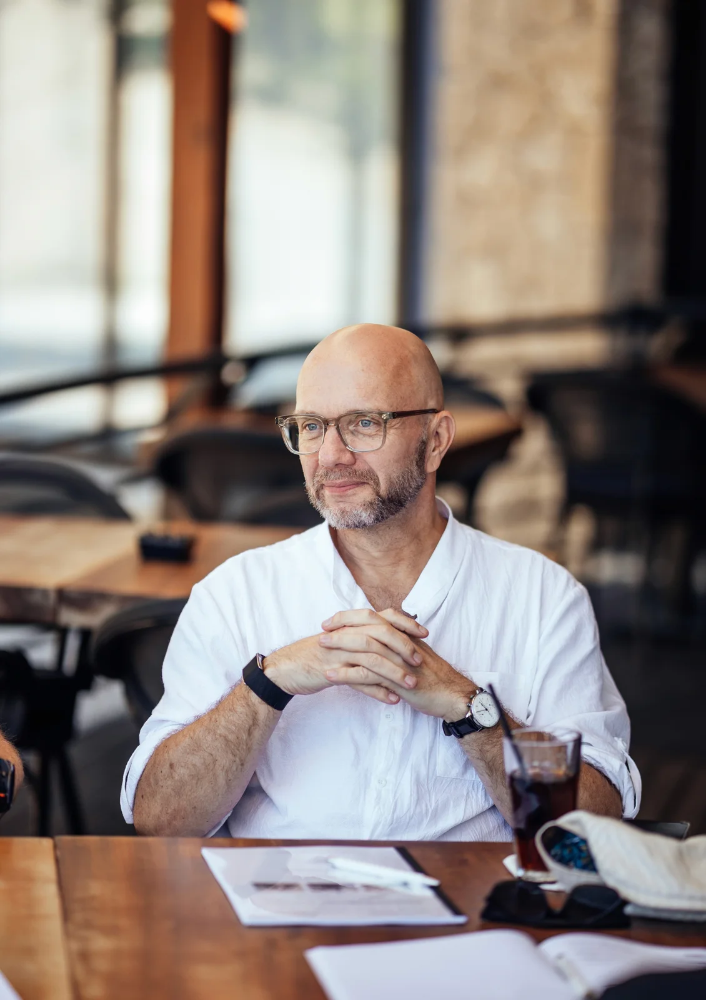

Der Nachdenker
Schlagfertigkeit lernen.Dir fehlen nicht die Worte. Sie kommen nur zu spät.
Im Meeting bleibst du still. Auf dem Heimweg hast du den perfekten Satz. Das Problem ist nicht dein Wissen, sondern der Moment. Schlagfertigkeit lernst du durch kurze Übungen mit ehrlicher Rückmeldung. Hier findest du drei davon und einen ruhigen nächsten Schritt.
227 von 250 Bewertungen mit 5 Sternen für Michael Ehlers auf ProvenExpert · über 8.000 Seminarteilnehmer
Talk to ME auf Skool. 44 US-Dollar im Monat.
Von der ersten bis zur letzten Rede
„Die Redeübungen haben mich definitiv auf ein anderes Level gebracht […] zwischen der ersten und der letzten Rede lagen wirklich Welten.“Jenny Eikel, Google-Bewertung, nach vier Seminartagen mit Michael Ehlers

Michael EhlersRhetoriktrainer seit 1990
Lehrbeauftragter an der Universität St. Gallen
Was ist ein Treppenwitz?
Ein Treppenwitz ist ein guter Gedanke, der dir einen Moment zu spät einfällt. Gemeint ist die Antwort, die dir erst beim Hinausgehen auf der Treppe kommt, wenn das Gespräch schon vorbei ist. Das Wort geht auf den französischen Ausdruck „l’esprit de l’escalier“ zurück, den Denis Diderot im 18. Jahrhundert prägte.
Abends im Bett oder im Auto liegt die Antwort dann bereit. Die Worte sind also da, nur der Zugriff im Moment fehlt. Den kannst du üben.
Drei Momente, in denen die Worte fehlen
Im Meeting
Jemand widerspricht dir, vielleicht sogar unfair. Du weißt, dass du recht hast, und sagst trotzdem nichts. Das Gespräch läuft weiter. Schlagfertig sein heißt hier, ruhig zu antworten, solange es noch zählt, ohne den anderen zu verletzen.
Mitten im Satz den Faden verlieren
Du sprichst, und plötzlich ist der Faden weg. Alle schauen dich an. Es sollte sich sicher anfühlen zuzugeben, dass man den Faden verliert. Das gelingt leichter, wenn du solche Momente schon geübt hast.
Frei sprechen lernen, ohne Skript
Du sollst frei sprechen, in der Präsentation oder im Vortrag, ohne Folien und ohne Notizen. Vorbereitet fällt es dir leicht. Spontan wird jeder Satz schwer. Frei sprechen kann man lernen, Schritt für Schritt.
Frei sprechen im SeminarWenn du dich in einem dieser Momente wiederfindest, bist du hier richtig.
Jeden Tag ein kurzer Impuls, regelmäßig Live-Calls mit Michael.
Warum die Worte erst später kommen
Klar denken kannst du. Du beweist es dir jedes Mal zwei Stunden später. Wenn die schlagfertige Antwort ausbleibt, fehlt selten das Wissen. Im Gespräch prüfst du jeden Satz, bevor du ihn sagst. Ist er gut genug? Klingt er richtig? Bis die Prüfung vorbei ist, ist der Moment vorbei.
In seinem Podcast „Unübersehbar“ erzählt Michael Ehlers von einer Unternehmerin mit fünf Standorten. Sie sitzt zwei Tage in seinem Seminar und schafft es nicht, eine einzige Bitte auszusprechen. In der Folge geht es um das, was Michael das innere Gericht nennt, und darum, was es mit deiner Sprache macht. [von Kunde bestätigen: Michaels eigener Satz, warum die Worte zu spät kommen]
„Wer schlagfertig ist, gilt als kommunikativ stark. Aber stimmt das auch?“ So fragt Michael in einer älteren Folge mit dem Titel „Schlagfertigkeit VS Wortmächtigkeit“. Die schnelle Pointe ist nur ein Teil. Der andere Teil ist, im richtigen Moment das zu sagen, was du wirklich meinst.
Wirkung beginnt nicht bei der Technik.
Die meisten Rhetoriktrainings starten bei Werkzeugen. Michael Ehlers startet davor: bei Persönlichkeit, Selbstbild, Mustern und innerer Stabilität. Erst wenn das steht, tragen die Werkzeuge. In seinem Podcast erklärt er, warum Technik ohne geklärte Person ein Kostüm bleibt.
Persönlichkeit.
Wer du bist, bevor du sprichst.
Kongruenz.
Wenn Haltung und Worte dasselbe sagen.
Wirkung.
Was davon im Raum ankommt.
Für dich heißt das: Du arbeitest an deiner eigenen Art zu antworten, ruhig und klar.
In der Community übst du mit Michael und anderen, jeden Tag ein bisschen.
Schlagfertigkeit lernen: Trainiere den Moment, nicht den Spruch
Rhetorik ist ein Handwerk, und jedes Handwerk braucht Übung. Wissen allein bringt dich hier nicht weiter. Michael erklärt im Podcast, warum sich Wissen wie Fortschritt anfühlt, obwohl es keiner ist. Die Expertiseforschung beschreibt echtes Training so: individuell, mit sofortigem Feedback, an der Grenze des eigenen Könnens und mit Wiederholung. Deshalb arbeitet Michael mit so wenig Theorie wie möglich und mit individuellem Feedback statt Stoffplan.
Rhetorik-Übungen: Schlagfertigkeit trainieren
Drei kleine Übungen für die nächste Woche:
Dreißig Sekunden Selbstaufnahme. Nimm dich eine halbe Minute mit dem Handy auf, etwa mit der Antwort, die dir nach dem letzten Meeting eingefallen ist. Michael nennt sie die härteste Übung von allen.
Zwei Minuten, ein Gedanke. Sprich zwei Minuten frei über ein Thema aus deinem Alltag. Ein Gedanke, ein Beispiel, ein Schlusssatz.
Eine ehrliche Rückmeldung. Frag eine Person, der du vertraust: Was ist bei dir angekommen?
[von Kunde bestätigen: weitere Übungen von Michael im Wortlaut]
Im Seminar übst du das mit Kamera und Gruppe: dreimal Videoanalyse mit Sofort-Feedback, dazu das VR-Training vor einem virtuellen Publikum.

„Was ich an dieser Gruppe besonders schätze, sind drei Dinge: die täglichen kleinen Impulse, die immer wieder zum Ausprobieren anregen. Das praktische Tun und das ehrliche Feedback der anderen. […]“
Talk to ME: die Community, in der du jeden Tag ein bisschen übst
Schlagfertigkeit wächst mit Übung, und üben fällt mit anderen leichter. Darum hat Michael Ehlers die Community Talk to ME gegründet. Sie läuft auf der Plattform Skool und ist privat. Laut Michael ist sie dafür da, dass du überzeugender sprichst, Manipulation erkennst und dich persönlich weiterentwickelst.
- Jeden Tag ein kurzer Impuls zum Ausprobieren, ohne langes Lernen
- Regelmäßige Live-Calls, in die du Michael deine echten Fälle mitbringst [von Kunde bestätigen: Rhythmus der Live-Calls]
- Verbales Judo als Ansatz für deine Schlagfertigkeit
- Eine 30-Tage-Challenge zum Mitmachen im Alltag
- Ein geschützter Raum, in dem alle üben, abseits deines eigenen Netzwerks
44 US-Dollar im Monat.
Zum Lesen, Hören und Zuschauen, ganz ohne Mitgliedschaft
Das Buch: „Nie wieder sprachlos!“
Erschienen 2019 im Gütersloher Verlagshaus. In 50 kurzen Kapiteln beschreibt Michael Ehlers Situationen aus dem Alltag, in denen einem die Worte fehlen, und gibt praktische Tipps. Wie entschuldige ich mich angemessen? Wie verteidige ich mich, wenn ich zu Unrecht angegriffen werde? Wie macht man ein Kompliment? Ein Kapitel zeigt drei Strategien gegen Dauerklagen: Distanzieren, Verantwortung übertragen und den umgedrehten Spieß. [von Kunde bestätigen: aktueller Titel und Bezugsquelle des Buchs]
Der Podcast: Unübersehbar
Seit 2008 spricht Michael hier über Rhetorik und Auftritt, Schlagfertigkeit und Wirkung, Führung und Persönlichkeit. Alle zwei Wochen erscheint eine neue Folge. Die neuesten Folgen dauern zwischen 6 und 12 Minuten.
Podcast anhörenLieber erst Michael zuhören? Er hat ein kostenloses Video-Training aufgenommen: Kostenloses Training ansehen [von Kunde bestätigen: Inhalt, Länge (rund 30 Minuten) und Anmeldung des Trainings]. Mehr Grundlagen findest du auf der Seite Was ist Rhetorik?

Michael Ehlers trainiert seit 1990 Menschen in Rhetorik
Sein erstes Rhetorikseminar gab er mit 18 Jahren. Heute ist er Lehrbeauftragter an der Universität St. Gallen und wird von ARTE und WELT TV als Rhetorik-Analyst angefragt. Das ERFOLG Magazin zählte ihn zu den Top 100 Trainern im deutschsprachigen Raum.
St. Gallen Lehrauftrag an der Universität
Über 8.000 Teilnehmer
Neun Bücher als Autor oder Herausgeber
Podcast „Unübersehbar“ seit 2008
Bring Michael deine echten Fälle in die Live-Calls mit.
So erlebten Teilnehmer das Üben mit Michael im Seminar
„Besonders beeindruckt hat mich der Praxisteil, in dem wir freie Reden vor der Gruppe hielten und sowohl von Michael Ehlers als auch von den anderen Teilnehmern wertvolles Feedback bekamen.“Michael B., ProvenExpert, Rhetorik 1 auf Mallorca
„Die Trainings vor der Kamera mit den darauf folgenden Auswertungen helfen die Selbst- und Fremdwahrnehmung zu schärfen.“Julian L., ProvenExpert, Rhetorik 1 auf Mallorca
„Die Herangehensweise und das individuelle Feedback haben mich sehr motiviert und mir unheimlich viel Selbstvertrauen geschenkt.“Jasmina L., ProvenExpert, Rhetorik 1 auf Mallorca
„Ich fand es spannend, dass wir Teilnehmer ein Mix von Anfänger bis Profi waren und Michael uns alle, egal auf welchem Level, weiterbringen konnte.“Christin R., ProvenExpert, Rhetorik 1 auf Mallorca
227 von 250 Bewertungen mit 5 Sternen für Michael Ehlers auf ProvenExpert. [von Kunde bestätigen: Einwilligung zur Nennung der Namen] Alle Stimmen lesen
So fängst du an, in deinem Tempo
- 1
Du trittst Talk to ME auf Skool bei. Du zahlst 44 US-Dollar im Monat.
- 2
Du übst im Alltag. Jeden Tag kommt ein kurzer Impuls zum Ausprobieren. Bei der 30-Tage-Challenge kannst du mitmachen.
- 3
Du bringst deinen Fall in einen Live-Call. Dort sprichst du mit Michael über echte Situationen aus deinem Alltag.
Du zahlst monatlich und kannst auf Skool kündigen. Wie das geht, steht in den häufigen Fragen.
Wenn du später vor Ort trainieren willst: Schlagfertigkeit ist Thema im Seminar Ruhig bleiben, wenn es eng wird [von Kunde bestätigen: Seminarname], das 2027 in Barcelona stattfindet. Alle Seminare
Talk to ME auf Skool, monatlich.
Häufige Fragen zur Community und zur Schlagfertigkeit
Was passiert in der Community?
Was kostet die Community?
Kann ich kündigen?
Brauche ich Vorwissen?
Wie viel Zeit brauche ich?
Wer ist in der Community?
Kann man Schlagfertigkeit lernen?
Was steckt hinter Schlagfertigkeit?
Mit welchen Übungen trainierst du Schlagfertigkeit?
Was hilft gegen Lampenfieber vor einer Rede?
Wie bekomme ich die Nervosität vor dem Sprechen weg?
Ich bin eher still. Ist das ein Nachteil?
Weitere Antworten findest du in den häufigen Fragen.